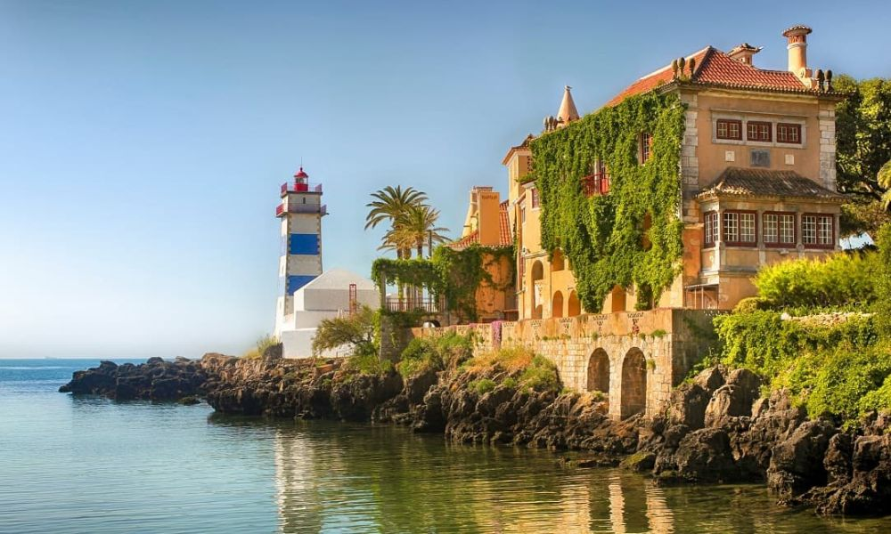

Descoperă Cascais - Orașul pitoresc de pe coasta Portugaliei
Cascais este un oraș fermecător situat pe coasta Portugaliei, cunoscut pentru plajele sale frumoase și atmosfera relaxantă:
-

Plaje spectaculoase
Cascais are o varietate de plaje cu nisip fin, perfecte pentru relaxare și sporturi nautice.
-

Marina vibrantă
Marina din Cascais oferă priveliști pitorești asupra bărcilor și opțiuni diverse de agrement.
-

Cetatea Cidadela
O zonă istorică cu străzi înguste, galerii de artă și restaurante care îmbină tradiția cu modernitatea.
-

Boca do Inferno
O formațiune stâncoasă spectaculoasă și atracție naturală aflată la scurtă distanță de oraș.
-

Evenimente culturale
Cascais găzduiește festivaluri, expoziții de artă și concerte, oferind o varietate de opțiuni de divertisment.
Concluzii
Cascais este un loc ideal pentru a te relaxa pe plajă, a explora istoria și a te bucura de atmosfera pitorească.